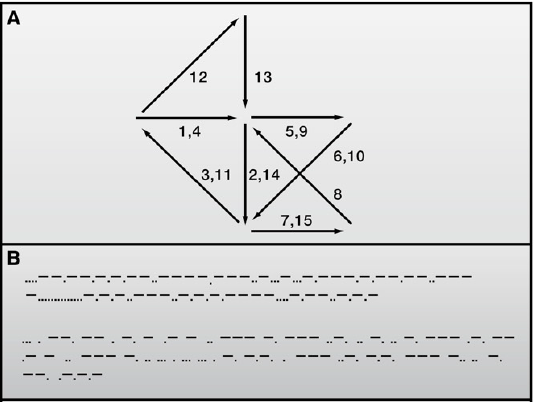
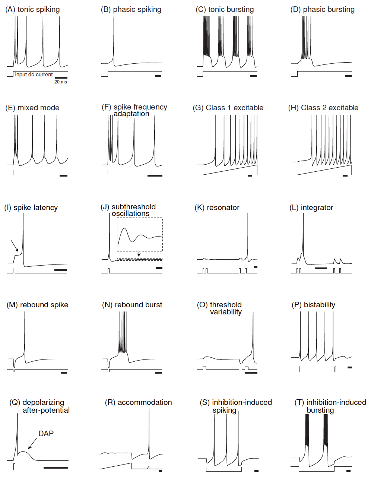

Week 11: neurons, I
Lecture 11.2: dynamic assemblies

Lecture 11.2: neurons, I (cont.)
A few more functions that neurons compute natively:
- DYNAMIC assemblies
- neurons as READOUT devices
many neurons acting together: cell assemblies and associative recall

Right: Donald Hebb's idea of cell assemblies.
For the cell assembly hypothesis to stand, key questions must be
addressed:
-
Why doesn't activity spread to the entire network and persist forever?
-
How can a far-flung set of neurons be causally effective as a group?
a side remark on associations and CONCEPTS: the Puzzle of Pineapple Pizza
Why would someone think of putting pineapple on a pizza?? Think
British-style gammon steak.
Concepts are DYNAMIC and are constituted
ad hoc; any instance of concept use is an
instance of CREATIVITY.
How could dynamic concepts be implemented in the brain, which is
presumably all "hard-wired"?
how cell assemblies emerge: neurons as read-out devices (Buzsaki, 2010)
Three hypotheses regarding cell assemblies:
-
Cell assemblies are best understood in light of their output, as
detected by "reader-actuator" mechanisms.
-
The hierarchical organization of cell assemblies may be regarded
as a
neural "syntax".
-
Constituents of the neural syntax are linked together by
dynamically changing constellations of synaptic weights
(ensembles of synapses, or "synapsembles").
[EXTRA: Note that the representations implemented by synapsembles are
DUAL to those
implemented by neural activities.]
cell assemblies and the problem of segmentation

(A) Hebb's reverberating cell assembly sequences ("assembly
phases"). Arrows represent transitions between individual
assemblies, numbered sequentially in order. The direction
of activity flow across assemblies (edges) is determined by the
stronger synaptic strengths among assembly members relative to
other connections (not shown). The same assembly can participate
in a sequence more than once (e.g., pathway 1, 4 indicates
recurring transitions).
(B) Top: long sequence of two characters (e.g., dot and
dash). Its embedded information is virtually impossible to
recover. Bottom: same exact sequence as above after adding
syntactic segmentation (space = stop-start punctuation) between
the short strings of
characters. The Morse code message reads: "segmentation of
information is essence of coding." By analogy, segmentation or
"chunking" of neuronal assemblies can be brought about by salient
external stimulus sequences, brain-initiated, modality-specific
synchronizing-blanking mechanisms (such as saccadic eye movement,
sniffing, whisking, active touch, licking, contraction of middle
ear muscles, etc.), internally generated oscillations, or other
syntactical mechanisms.
reader-defined cell assemblies

(C) Neurons that fire within the integrating window of a reader
mechanism (corresponding, e.g., to the ability of a reader neuron to integrate
its inputs within the time frame of its membrane time constant) define an assembly
(irrespective of whether or not assembly members are interconnected
synaptically among themselves). Readers a, b, c ,and
w may receive inputs from many
neurons (1 to n) by way of synapses differing in strength but respond only to
a combination of spiking neurons to which they are most strongly connected
(e.g., reader a responds preferentially to cofiring of neurons 1, 5, and 9 at \(t_1\),
even though it may be synaptically innervated by neurons 2, 6, and 10 as
well; at \(t_2\), neuron b fires in response to the discharge of neurons 2, 6, and
10).
Synaptic strengths between neurons vary as a function of the spiking
history of both postsynaptic and presynaptic neuron
(short-term plasticity, to be discussed
next week).
The response of the reader neuron, therefore, depends on both the identity
of the spiking upstream neurons and the constellation of current synaptic
weights ("synapsembles"). Reader mechanism q has a longer time integrator
and, therefore, can link together assemblies to neural "words," reading out
a new quality not present in the individual representations of a, b, and
c.
cell assembly: the fundamental unit of neural syntax

(A, B) Raster plot (A) of a subset of hippocampal pyramidal
cells that were active during a 1 s period of spatial exploration
on an open field out of a larger set of simultaneously recorded
neurons, ordered by stochastic search over all possible orderings
to highlight the temporal relationship between anatomically
distributed neurons. Color-coded ticks (spikes) refer to recording
locations shown in (B). Cell assembly organization is visible,
with repeatedly synchronous firing of some subpopulations
(circled).
Vertical lines indicate troughs
of theta waves (bottom trace). Note that assemblies
can alternate (top and bottom sets) rapidly across theta
cycles. [MORE about BRAIN OSCILLATIONS later.]
(C) Spike timing is predictable from peer
activity. [NOTE: this implies some very interesting collective
dynamics, such as
emergence and
downward causation.] The histogram here shows
the distribution of timescales at which peer activity
optimally improved spike time prediction of a given cell,
shown for all cells. The median optimal timescale is 23 ms
(red line).
synchrony is only a small part of the story of TEMPORAL PATTERNS of neural activity

Summary of neuro-computational properties exhibited by Izhikevich's
"simple model":

Eugene M. Izhikevich, Dynamical Systems in Neuroscience: The Geometry
of Excitability and Bursting, MIT Press, 2005.
Re the next slide, note especially case (K),
"resonator".
(K) an example in which input spike frequency is key: switching/steering a signal

Cell A can direct its output selectively:
- to cell B, by emitting 4 spikes at intervals of 12 ms,
or
- to cell C, by emitting 4 spikes at intervals of 18 ms.
Eugene M. Izhikevich, Dynamical Systems in Neuroscience: The Geometry
of Excitability and Bursting, MIT Press, 2005.
[back to Buzsaki] example of read-out: olfaction in the locust

(A) Wiring diagram of the early olfactory system of the
locust. An odorant evokes an odor-specific
temporal pattern in several of recurrently connected antennal
lobe (AL) projection neurons (PNs), coordinated by a 20–30 Hz
(gamma)
oscillation. Kenyon cells (KC) of the mushroom body (MB) are
the readers of the activity of AL projection neurons (PNs) and
integrate their spikes.
(B) Firing patterns of 3 AL neurons (PN1-3) in response to
16 different odors. The activity of AL neurons defines the
"population vector" or "state" of the network; the time-varying
population vector (i.e., the shifting states) ascribes a
trajectory. The state evolves over a few hundred milliseconds
before relaxing back to baseline (illustrated by the curve in the
inset in A).
(C) Activity of 3 KCs. Each KC carries out a pattern matching
operation between its synaptic vector and the PN population activity
vector. The AL output evokes a single burst in the reader KC
("sparse coding").

another example: birdsong

(D) Time-frequency spectrum of a zebra finch song and its amplitude
envelope.
(E) Spike raster plot of eight projection neurons in area
HVC (10 repeats). Each ensemble pattern ("state") in
HVC specifies a note to be sung; the temporal sequence of notes
(trajectory) defines the song and is read out and sent to the motor
execution system by the subsequent stages.
(F) Interneuronal activity is also temporally organized and relates
to the syntactic structure of the song.
now: some attention to BRAIN OSCILLATIONS

Simultaneous ECoG–laminar recordings reveal traveling
alpha waves which propagate through supragranular
cortex (from
Halgren et al. 2019).
-
Average circular distance of each
ECoG (circles) and
layer I laminar (diamond)
contact’s alpha
phase from the spatial mean phase throughout
the ECoG grid. Note that the laminar’s alpha phase is
intermediate to neighboring ECoG contacts, suggesting that
ECoG and the laminar probe recording the same traveling wave
at different scales.
-
Representative drawing of a traveling alpha wave (as measured
with ECoG) propagating through superficial layers (as measured
by a laminar probe).
-
Example traces from ECoG contacts posterior (red) and anterior
(blue) to the laminar probe. Alpha phase in the laminar is
intermediary to the ECoG contacts.
-
Distribution of traveling wave directions; mu waves propagate
from posterior (higher-order) toward anterior (lower-order)
cortex.
-
Power spectra from simultaneous laminar and ECoG recordings;
they share a near-identical alpha peak.
-
Laminar CSD (current-source density) averaged on troughs in
the nearest ECoG contact. Note that alpha activity is
superficial.
how alpha waves could mediate feedback
(from
Halgren et al. 2019)
-
Alpha propagates as a traveling wave from higher-order (middle
temporal) toward lower-order visual areas.
-
Alpha is strongest within supragranular cortex and may carry
top-down information via short-range feedback connections to
constrain lower-level processing; for instance, alpha may play
a role in resolving ambiguous visual imagery, such as the
picture of a woman and a horse’s snout shown above. Cortical
alpha in layer VI might influence alpha activity within the
pulvinar.
how alpha frequency affects the attentional blink
(from
Samaha & Postle, 2015)
-
Individuals with higher alpha frequencies have vision with
finer temporal resolution.
-
Eyes-closed and prestimulus peak alpha frequency both show
this relationship.
-
Within an individual, spontaneous fluctuations in alpha
frequency predict perception.
-
Alpha oscillations may dictate the resolution of conscious
visual updating.
how alpha frequency affects the attentional blink
Between- and within-subjects analysis of prestimulus alpha
frequency (from
Samaha & Postle, 2015).
-
IAF (individual alpha frequencies) derived from alpha activity
prior to stimulus onset was also highly correlated with
two-flash fusion thresholds (rho = 0.605; p = 0.004),
indicating that subjects with higher frequency alpha
oscillations perceived two flashes at shorter ISIs
(inter-stimulus intervals).
-
A within-subjects analysis of the instantaneous alpha
frequency prior to stimulus onset reveals significantly higher
alpha frequency preceding correctly discriminated
trials. Significant time points are indicated with black
squares (p < 0.05; permutation test; cluster corrected).
Shaded regions denote ± within-subjects SEM.
lessons?
So, what is it that neurons compute natively?
-
Do linear algebra (vector projection / inner product, matrix
multiplication).
-
Implement dimensionality reduction (from many dimensions to
one), including similarity-preserving DR by random projections.
-
Perform function approximation (when arranged
in multilayer networks).
-
Respond selectively (exhibit tuning) [and thus serve as
landmarks/prototypes in a similarity-based representation
scheme, a.k.a. the Chorus Transform].
-
Form spatial maps, presumably to facilitate navigation, episodic
memory and prospection, and social cognition.
-
Form abstract maps (retinotopic, tonotopic, chronotopic, etc.),
presumably to facilitate similarity-based readout.
-
Organize themselves in dynamic assemblies (note the importance of
time) implemented by readout mechanisms.